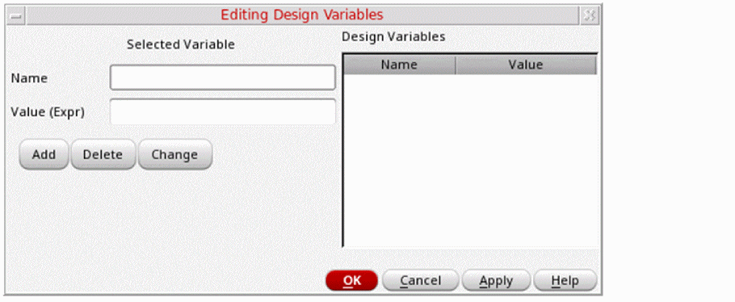

Configuring Design Variables
You can add, delete, or change design variables in your netlisting settings in SystemVerilog Netlister after choosing your design.
-
Click Design Variables in the SystemVerilog Netlister window.
The Editing Design Variables Form opens.
 - Specify a name for the design variable in the Name field.
- Specify a value for the design variable in the Value (Expr) field.
-
Click Add to add a variable.
The design variable appears in the Design Variables list on the right and is saved in thecds_globals.svfile. - Click Delete to delete a design variable by selecting the variable name from the Design Variables list box.
-
Click Change to change the name or value of a design variable by selecting the variable name from the Design Variables list box.
Edit the name or the value of the design variable, as required. - Click OK.
The design variable is updated as specified.
Related Topics
SystemVerilog Netlister Graphical User Interface
Return to top